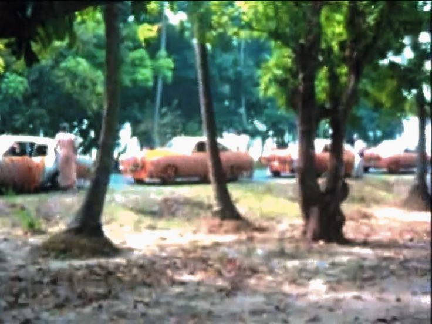

'This is Preaching'
Posted on : 20th March, 2025

Srila Prabhupad's royal convoy, Stopping halfway to Mayapur at the mango groove to honor breakfast prasadam
In Calcutta 1976 Gour Purnima Mayapur Festival, I arranged through the Minister of Tourism, West Bengal, Tarun Kanti Ghosh the rental of Six New Chevy Cars, to carry Srila Prabhupada and Sannyas's to Sri Dham Mayapur, along with the Six Mercedes Vans which I drove from Germany to India (see book, 'Gargamoney') We drove all in procession with the vans blasting the HK Mahamantra through the main streets of Calcutta. The populated chaotic streets of Calcutta were frozen on this 12 vehical procession of foreign made cars slowly passing. Srila Prabhupada, in full-approval turned around in His front seat to me in the back-seat, and loudly exclaimed, "This is Preaching".......which I took as His Divine Grace upon my soul.......
~ Gargamuni Prabhu